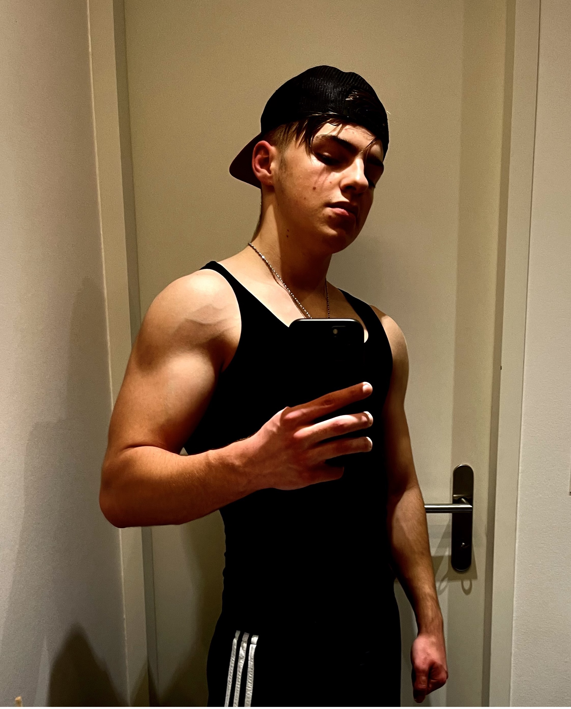

Über mich

Allgemein
Ich bin Marco Mettler.
Ich lebe im Kanton Thurgau genauer gesagt in Horn am Bodensee.
Momentan bin ich 16 Jahre alt und mache eine Lehre zum Informatiker Applikationsentwicklung EFZ in der Abraxas Informatik AG in St.Gallen.

Hobbies
Ich bin seit 6 Jahren Jungschütze und Mitglied im Schützenverein Horn ausserdem gehe ich ins Fitnesstudio.
Das Schiessen ist meine Lieblingsportart da sie Konzentration und Übung erfordert.
Strassenbande
Mit meinen Jungs gehe ich gerne mal einen rein Saufen oder auf irgendeinen Bauernhof eine Party feiern.